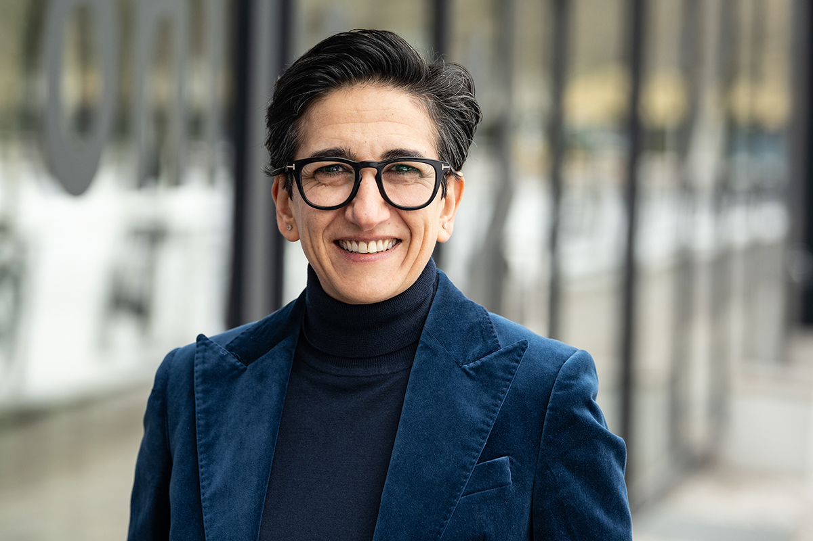
Adina Hotels
Porträtserie für die Adina Hotels: Für Website, Social Media und Publikationen habe ich Führungskräfte des Unternehmens fotografiert – darunter CEO Asli Kutlucan.
In Berlin und bundesweit unterstütze ich Unternehmerinnen, Vorstände, Geschäftsführer und Führungskräfte dabei, ihre Haltung und Vision in der visuellen Kommunikation sichtbar zu machen.
Sie gestalten Transformation, führen Ihre Teams mit Respekt und setzen auf transparente Kommunikation, Offenheit und nachhaltiges Handeln.
Genau diese Werte übersetze ich in visuelle Botschaften.
Ein charakterstarkes Porträt transportiert Ihre Souveränität, zeigt Ihre menschliche Nahbarkeit und unterstreicht Ihren unternehmerischen Erfolg. So werden Sie als Vorbild wahrgenommen und schaffen echtes Vertrauen bei Mitarbeitenden, Partnern und Kunden.
Lassen Sie uns Ihre Haltung sichtbar machen und vereinbaren Sie ein unverbindliches Kennenlerngespräch.
Kennenlerngespräch vereinbaren
Porträtserie für die Adina Hotels: Für Website, Social Media und Publikationen habe ich Führungskräfte des Unternehmens fotografiert – darunter CEO Asli Kutlucan.

Porträts der Managing Partner von GSK Stockmann, umgesetzt für den prägnanten Markenauftritt auf der Website sowie in Unternehmenspublikationen.
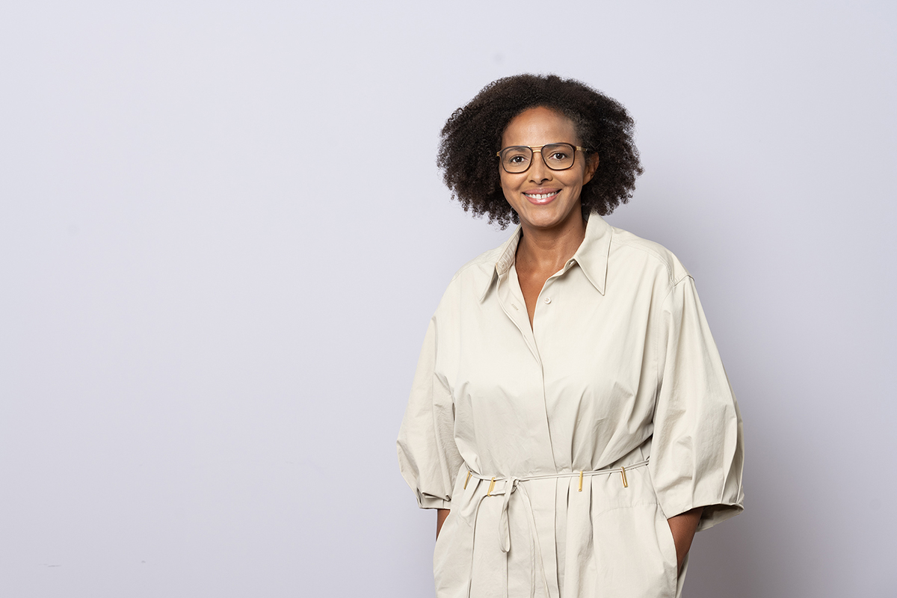
Für PMG Presse-Monitor realisierte Porträts der Geschäftsführung, darunter Natascha Thomas. Die Aufnahmen kommen auf der Website sowie in verschiedenen Publikationen zum Einsatz.
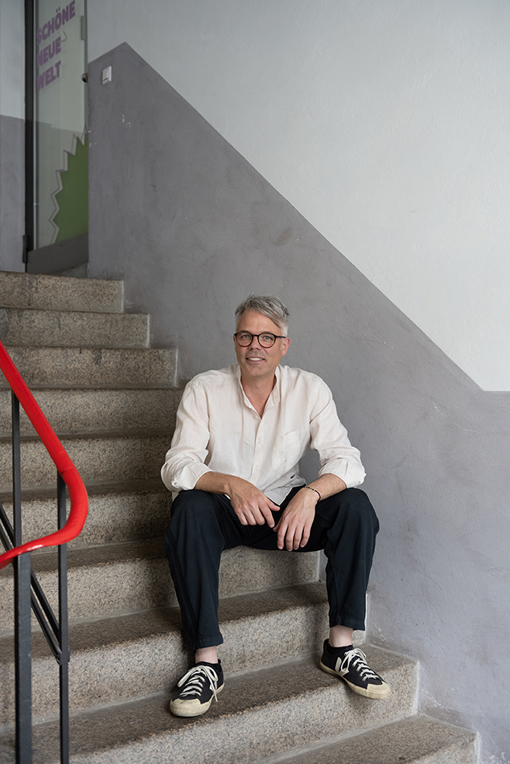
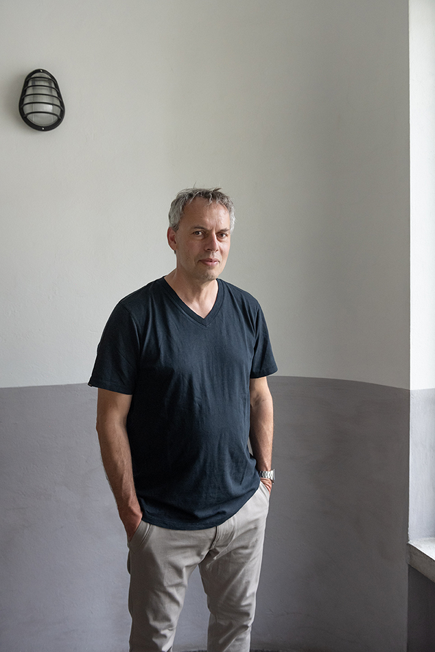
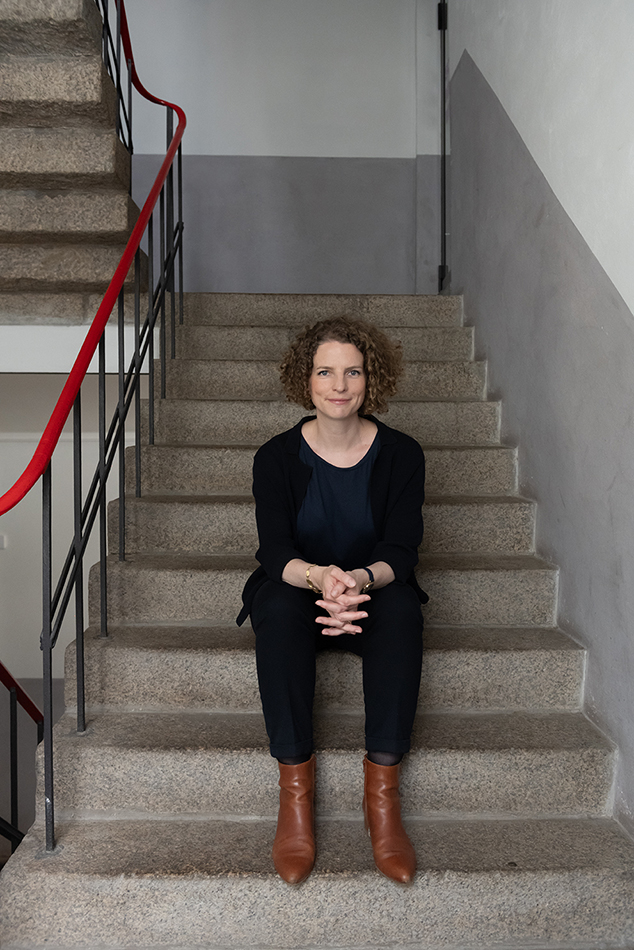
Porträtserie für weberbrunner architektur (Zürich/Berlin): Fotografische Begleitung der Geschäftsführung (Roger Weber, Boris Brunner und Elise Pischetsrieder) für Social Media und Website – ergänzt anlässlich der Umfirmierung des Berliner Büros zu weberbrunner pischetsrieder architektur.
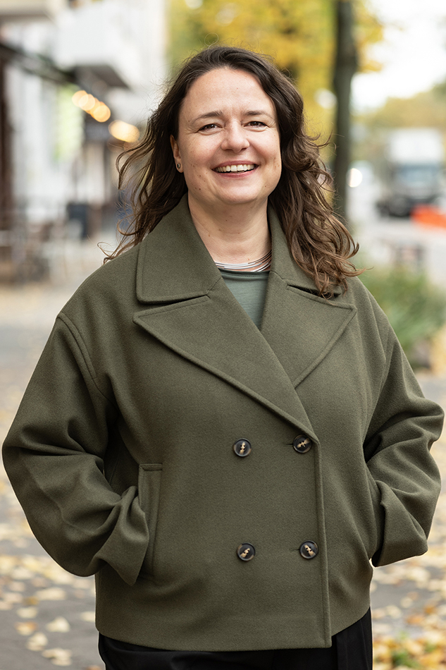
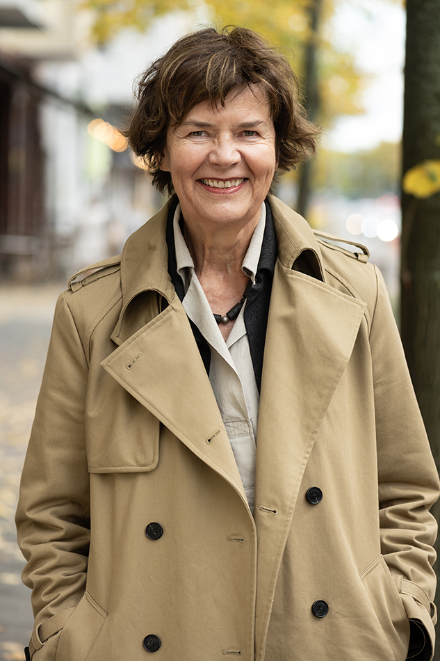
Porträt- und Teamserie für Anne Lampen Architekten: Fotografische Begleitung der Geschäftsführerinnen Susann Belitz und Anne Lampen sowie des gesamten Teams. Die Aufnahmen wurden für den Webauftritt, Publikationen und Wettbewerbe umgesetzt.
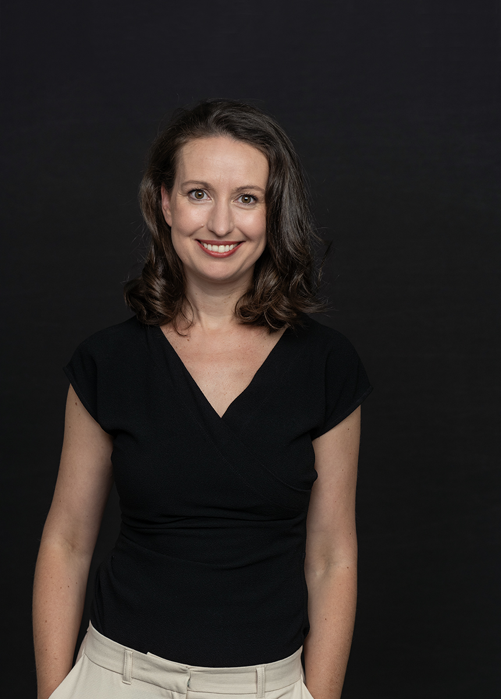
Unternehmensporträts für die Georg Neumann GmbH: Aufnahmen von CEO Yasmine Riechers und allen Mitarbeitenden für Website, Social Media und interne Kommunikation.
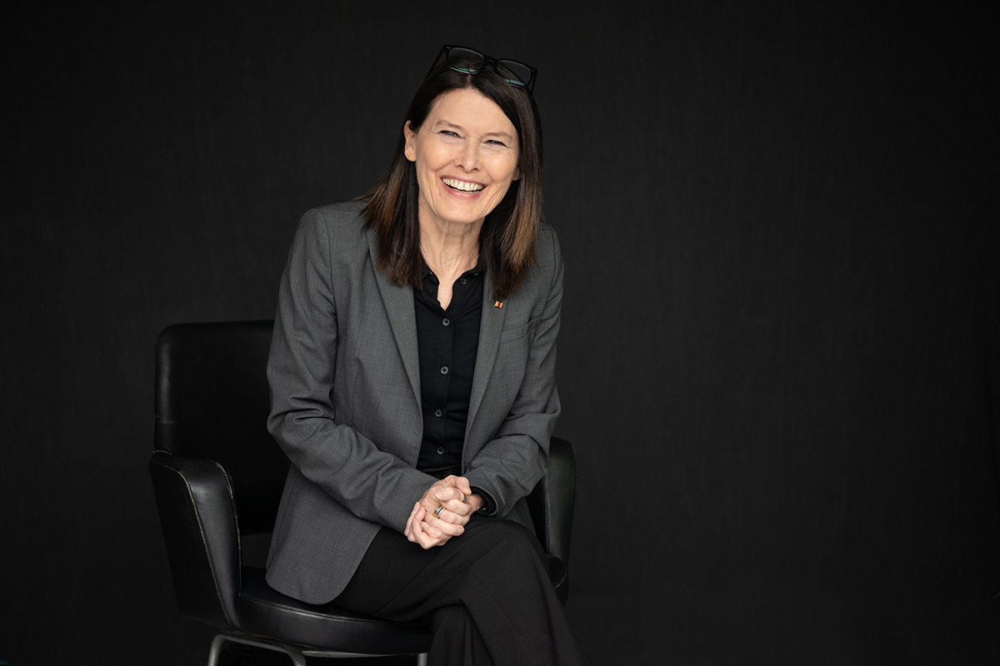
Porträtserie von Cordula Heckmann, der ehemaligen Schulleiterin des Campus Rütli in Berlin. Die Aufnahmen wurden für die Nutzung in verschiedenen Publikationen realisiert.
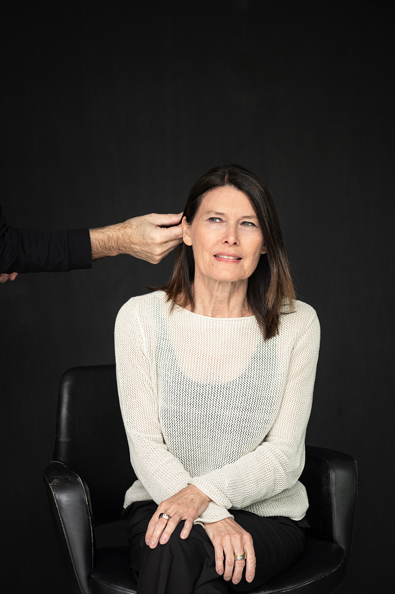
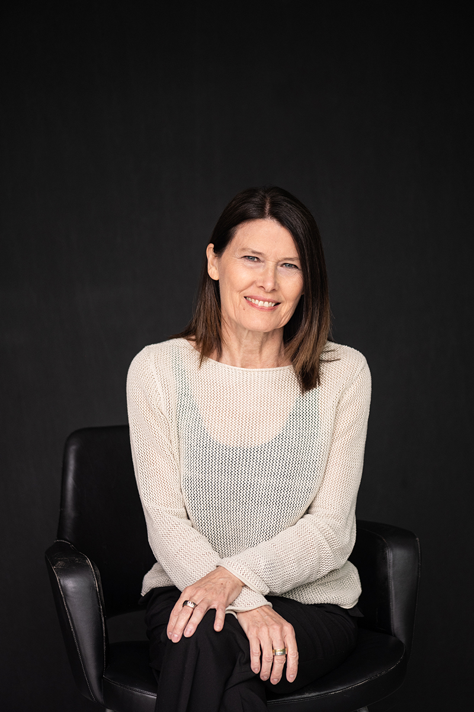
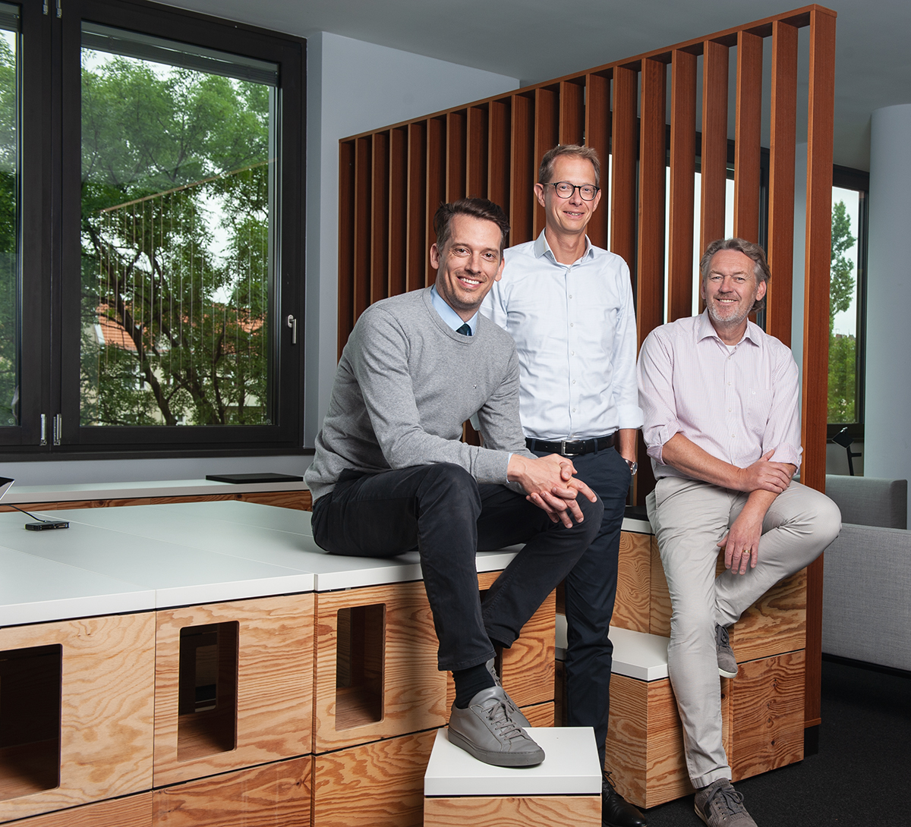
Porträtserie für CMS Hasche Sigle: Aufnahmen der Partner zur Nutzung auf der Website und für Social Media.